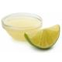

Musse de limão
| Tempo | Dificuldade | Porções |
|---|---|---|
| 1:10 hora | Fácil | 10 |
Autor: autor
O mousse de limão é uma sobremesa clássica que combina perfeitamente o sabor cítrico do limão com a suavidade e a leveza de uma textura aerada. Esta receita é uma verdadeira explosão de frescor e prazer para o paladar. Com apenas três ingredientes simples - o suco de limão, o leite condensado e o creme de leite-, esta sobremesa é fácil de preparar e ideal para surpreender amigos e familiares. A mistura do azedinho do limão com o doce suave do creme resulta em um contraste de sabores que conquista a todos. Seja para uma reunião especial ou para um dia comum que merece um toque de doçura, o mousse de limão é uma escolha refrescante e versátil. Sirva essa sobremesa geladinha e desfrute do frescor e da delicadeza de cada colherada, proporcionando um final perfeito para qualquer refeição.
Ingredientes
-

1 lata de leite condensado
-

1/2 xícara de suco de limão
(esse suco é puro mesmo,
sem água, é só espremer o limão) -

1 lata de creme de leite
Utensílios

Modo de Preparo
- Coloque no liquidificador o creme de leite (com soro mesmo) e o leite condensado.
- Bata um pouco e depois vá acrescentando o suco do limão, aos poucos.
- Ele vai ficar bem consistente, leve à geladeira.
Comentários
- 3 comentários